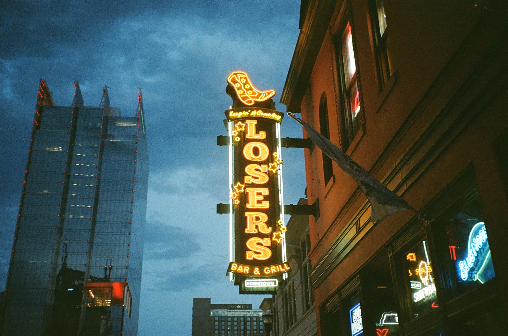

Field Trip: Nashville
August 01 2022

I fucking love music.
Last year was the first time I actually celebrated my half-birthday, and I wanted to continue celebrating this year by travelling to Nashville aka Music City. Originally I was going to go to Nashville and New Orleans because they're both defined by music, but then I felt going to both would be overwhelming so I decided to tuck the New Orleans trip in my pocket for later.


I mostly spent my trip snaking through Broadway listening to music at the honky-tonks and trying to find the perfect pair of cowboy boots. What I really loved about Nashville was, of course, the music playing everywhere all the time. There's something about live music that I love so much, and I didn't realize it until I visited Nashville. I love the energy of live music and every band I heard play was really talented.
Being surrounded by so many musicians was pretty sick, it made me want to learn how to play an instrument. When I was a kid I dreamed of becoming a musician but I never really had the money to do it. I'm hoping next year I'll make the time.


Another thing I really liked seeing was the Dolly hero-worship all over the city. Dolly Parton is like one of my favorite artists, I love her story and her music. At the hotel I was staying at, The Graduate, there were Dolly portraits all over the place, even right above our beds. Starland Vintage had Dolly on their walls and even on their curtains.
There were also a couple of museums I ended up visiting. I wanted to learn more about the history of music so I went to the Country Music Hall of Fame and the National Museum of African American Music. On my last day I visited Hatch Show Print shop. I tried to look for places that might sell zines but found this place instead. They do letterpress printing and it gave me ideas for a future print shop I'd like to open some day in Charlotte.
I had such a good time, I definitely want to go back to hear more music and party!


I feel like I was accessing an alternate reality in Nashville. One where I spend my days listening to music, making music, and just generally having fun.
I don't yet know what it takes for an epiphany to become life-changing, and I do think realizing that my life can be different is an epiphany. But how to let that energy transform you? How to move through fear to make the neccessary adjustments to live the life you want? Questions, to which answers I'm not quite sure of...


